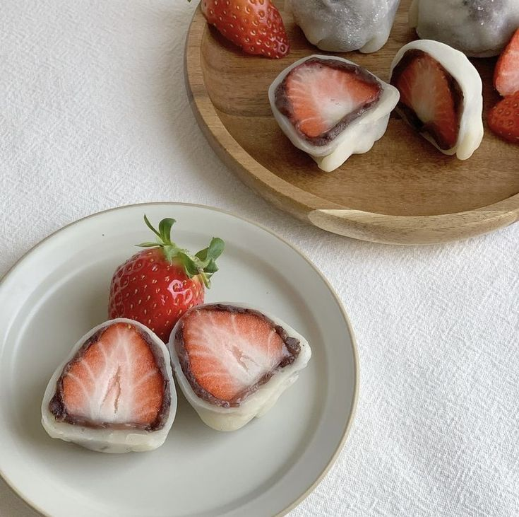

DAIFUKU

INGREDIENTS
¾ cup shiratamako (glutinous rice flour/sweet rice flour) (or use mochiko; see the measurement below)
¼ cup sugar (do not omit; the sugar helps the mochi stay soft)
¾ cup water
½ cup potato starch or cornstarch
1½ cup sweet red bean paste (anko) (I use tsubuan chunky paste; you can make Homemade Anko)
INSTRUCTIONS
-
Combine ¾ cup shiratamako (glutinous rice flour/sweet rice flour) and ¼ cup sugar in a medium bowl and whisk it all together. Tip: If you can‘t find shiratamako, you can substitute ¾ cup mochiko (glutinous rice flour/sweet rice flour).
-
Add ¾ cup water and mix well until combined.
-
Microwave Method: If you’re using a microwave to cook the mochi, loosely cover the bowl with plastic wrap. Put the bowl in the microwave and heat it on high (1100w) for 1 minute. Take it out and stir it with wet rubber spatula. Cover again loosely and cook for 1 additional minute. Stir again, cover loosely, and cook for 30 seconds more to finish cooking. The color of the mochi will change from white to almost translucent.
-
Steaming Method: If you’re using a steamer, wrap the steamer lid with a towel so the condensation does not drop into the mochi mixture. Put the bowl into the steamer basket and cover to cook for 15 minutes. Halfway through cooking, stir it with a wet rubber spatula, then cover to finish cooking. The color of the mochi will change from white to almost translucent.
-
Cover your work surface with parchment paper and dust it generously with some of the ½ cup potato starch or cornstarch. Then transfer the hot mochi on top.
-
To prevent it from sticking, sprinkle more potato starch on top of the mochi. Once it cools a bit, spread the mochi into a thin layer, about 3/16 inch (4–5 mm), with your hands or with a rolling pin. Make sure to apply potato starch to your hands and the rolling pin as needed. I recommend using a rolling pin because it’s easier to evenly spread out the mochi.
-
Transfer the mochi with parchment paper onto a large baking sheet. Refrigerate for 15 minutes (no more than that) until the mochi is set.
-
Take out the mochi from the refrigerator and cut 7–8 mochi wrapper circles with a 3½-inch (9-cm) cookie cutter.
-
Dust off the excess potato starch from these wrappers with a pastry brush. If you find any sticky spots, cover the area with potato starch, then dust it off. Next, stack the wrappers: Place a piece of plastic wrap on a plate and put a mochi circle on top. Then, layer another piece of plastic wrap on top, and add another wrapper. Repeat for all the wrappers. Roll the leftover mochi dough into a ball, roll it out into a thin layer, and cut out more wrappers circles. You can make about 12 mochi wrappers.
-
Now, we’re ready to make the Daifuku. On the work surface, place one sheet of plastic wrap with a mochi wrapper on top. Using a medium cookie scoop, place one scoop of the 1½ cup sweet red bean paste (anko) on top of the mochi wrapper.
-
Pinch the four opposite points of the mochi circle together to enclose the anko. Then pinch the remaining edges together.
-
Put some potato starch on the sealed area and set aside, seam side down. Continue making the rest of the Daifuku.
-
Keep the Daifuku mochi in an airtight container and store in a cool, dry place. Enjoy within 2 days. For summer months when it‘s very hot, you may want to refrigerate these; since mochi gets hard in the refrigerator, you will need to wrap the container with a thick kitchen towel to keep it cool but not cold.